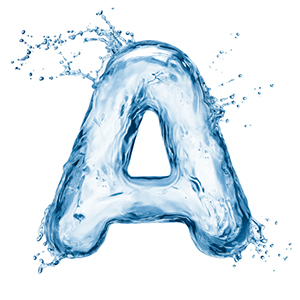
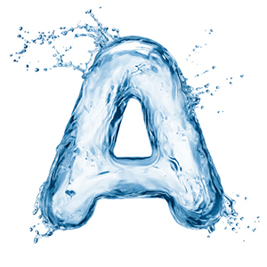

Visit us :


1. How many tropical fish can I have?
2. Can I use tap water to fill my tank?
3. How often should I change the water?
4. How often should I feed my tropical fish?
5. What are some good tropical fish for beginners?
6. Help, I can't find my fish! Where is it?
7. What should the fish tank temperature be set at?
8. Can I leave my aquarium lights on 24 hours?
Answers


 
